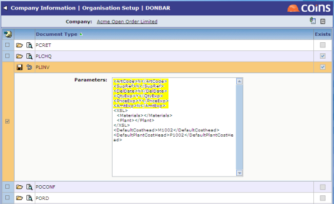

When 3-way matching Purchase Orders to GRNs to Invoices, or 2-way matching POs to Invoices there are seven criteria that are vital in the auto-matching process:
Apart from the order number, any of these checks can be disabled (either for all invoices or for individual
The 2-way match process is invoked if the accrual method for the
A 3-way match can be attempted using eCommerce Invoices Automatch Costing or by running E-Invoices for Matching Report.
Any of the invoice matching criteria (except the Purchase Order number) can be turned off using the parameter PO/AUTCHK. This parameter holds a pipe-separated list of options. For example:
Here all criteria are checked except for the expected price. If the parameter is blank, all checks are made.

Here the Delivery Date criterion has been relaxed for Acme Open Order Limited.
The matching process is determined by configuration. For material orders, the JC/ACCMETH states what accrual methods are valid; choose from any or all of these values:
O Order
G GRN
Z Neither
The
The
Where O is used and the PL/AUTOINVM parameter is set to 2, it is possible for an eInvoice to go straight to approval if all the matching criteria described above are met.
2-way matching of eInvoices is enabled if the PL/AUTOINVM parameter is set to 2.
The 2-way match process can be restricted to specific
For example, if PL/AUTOINVM is set to N (that is, by default, we do not want to 2-way match), setting PL/AMJOBS to A*|2,B*|2,C*|0 will attempt to 2-way match invoices for any
This could get more elaborate because the parameter is read from left to right. So setting PL/AMJOBS to AA*|0,A*|2,B*|2 will not try to two-way match anything beginning AA but will attempt anything else beginning A, and try to match anything beginning B. As a belt and braces measure you could add *|0 as another value at the end of the list but this is implied by the setting of PL/AUTOINVM. (For consistency with the PL/AUTOINVM parameter, you can use N in PL/AMJOBS if you wish instead of 0.)